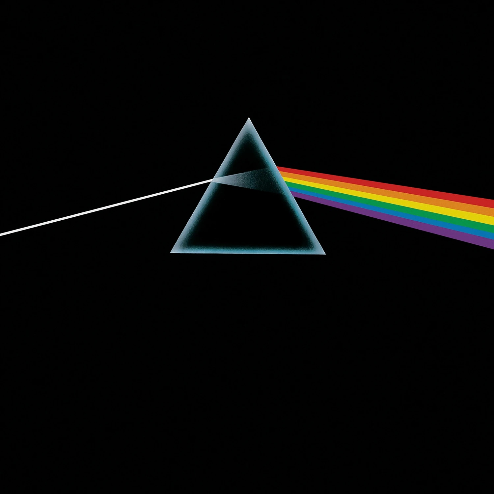

The Dark Side of the Moon

Виконавець: Pink Floyd
Рік випуску:
Жанр: Рок
Треків: 10
Ключовий трек: Time
Опис: Концептуальний альбом про тиск, час, гроші та божевілля. Треки перетікають один в одного без пауз, тому слухати його краще цілком.